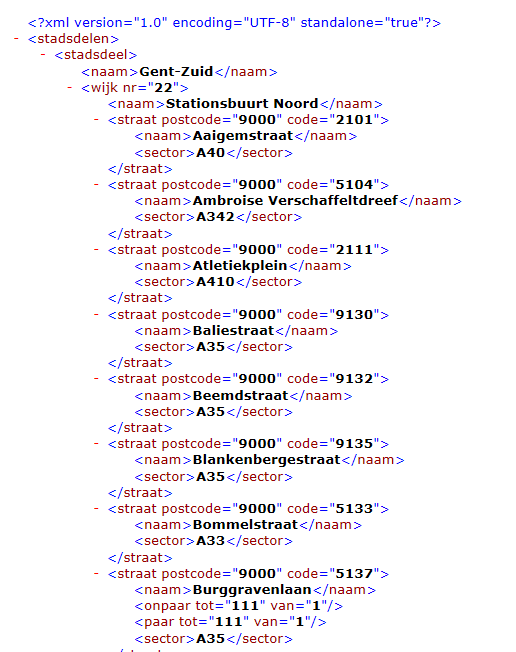

SAX en JAXB
In dit labo transformeren we het XML-bestand met de
straten van Stad Gent met SAX en JAXB.
Schrijf een programma dat het stratenbestand omvormt naar een XML-bestand dat
voldoet aan de structuur beschreven in stratenPerStadsdeel.xsd. De figuur toont een voorbeeld van een deel van
het nieuwe XML-bestand.
Een paar tips:
-
Het programma leest de XML in gebruik makend van de SAX API in Java.
-
Het aanmaken van de nieuwe XML doe je met JAXB. Dit wil zeggen dat je in de Contenthandler, JAXB-objecten aanmaakt die je dan met een marshaller uitschrijft
naar een bestand.
-
De klassen waartoe die JAXB-objecten behoren, kan je genereren aan de hand van het gegeven XML-Schema stratenPerStadsdeel.xsd.
Daartoe voeg je een nieuwe JAXB-binding toe aan het project (net zoals je een nieuw java-bestand toevoegt). Allicht moet je nog een of andere bibliotheek toevoegen.
